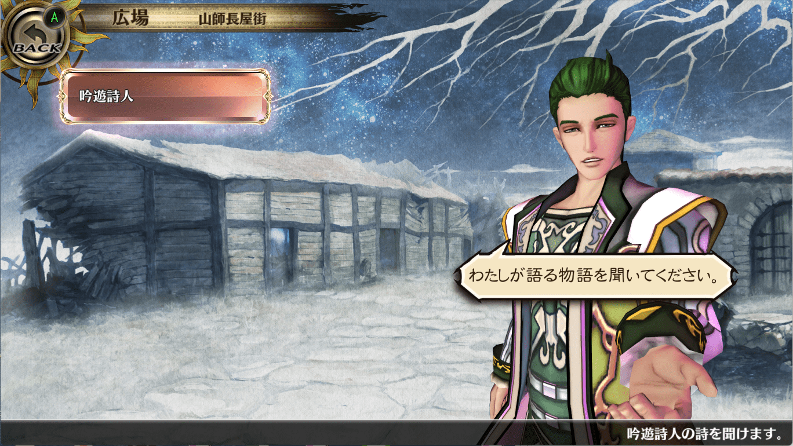
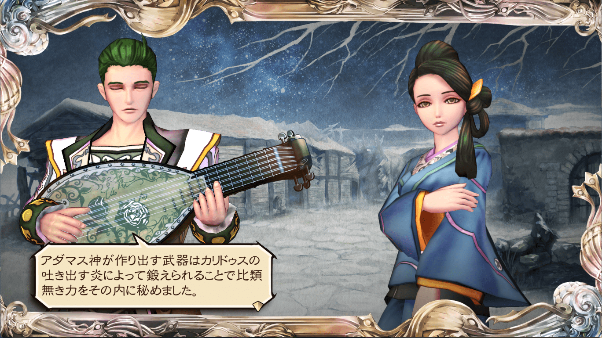
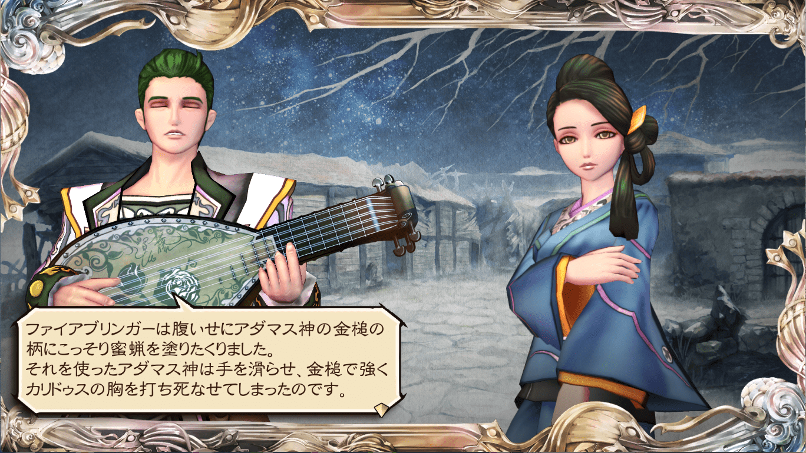
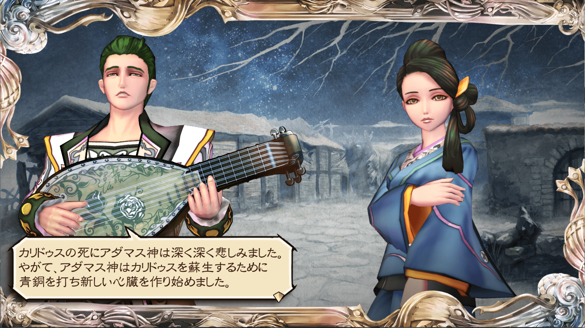
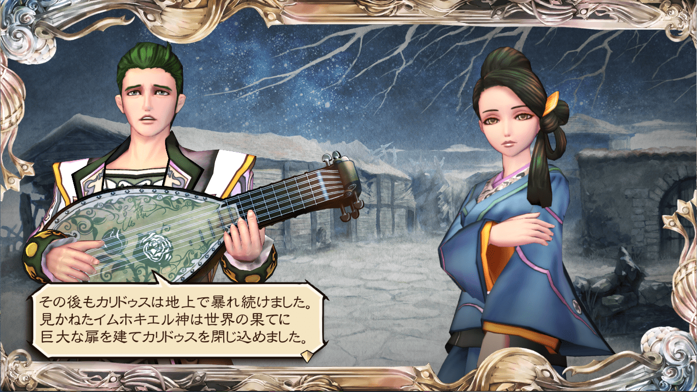
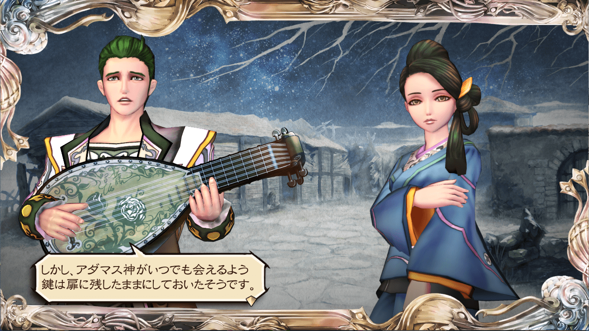
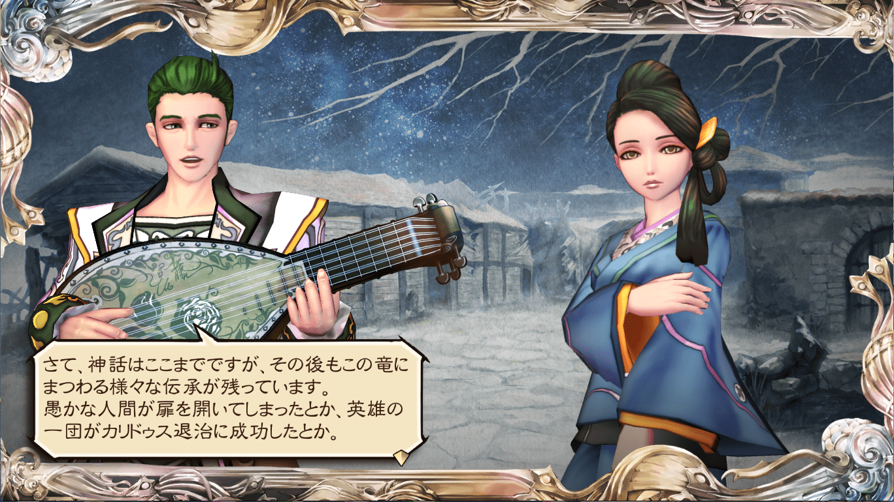
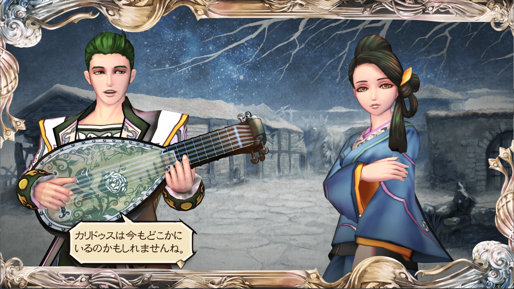

星神アダマスと相棒の竜カリドゥス
詩人の詩
        上記登場人物を整理します。十二星神について
アダマス
アダマスは十二星神の一柱で、鍛冶の星神です。その力を使って青銅を打ってカリドゥスの新しい心臓を作りました。
#サガスカ #サガスカーレットグレイス #緋色の野望 #どんなゲーム
— 河津秋敏 (@SaGa30kawazu) July 9, 2018
その36. 鍛冶の星神アダマス
鉱石の採掘から精錬、様々な道具の鍛造まで全てを教えた星神です。武器や防具だけでなく、農具や調理器具まで、金属製品による恩恵は全ての人に及びます。しかし、さほど人気が無いのは何故でしょうか。 pic.twitter.com/pZIuCtu9xl
カリドゥス
カリドゥスはラテン語で「猛火」という意味があります。鍛冶には炎が必要なので、カリドゥスの炎はアダマスに取っては欠かせないもので、それゆえに大切な相棒だったのでしょう。その相棒を失ってしまったアダマスの心中は穏やかではなかったでしょう。
イムホキエル
イムホキエルも十二星神の一柱で、建築の星神です。その力で世界の果てに巨大な扉を建て、カリドゥスを閉じ込めました。
#サガスカ #サガスカーレットグレイス #緋色の野望 #どんなゲーム
— 河津秋敏 (@SaGa30kawazu) June 28, 2018
その25. 建築の星神イムホキエル
測量や幾何学から石や木材を切り出し運搬する技術、そして実際の建物や道路などを作り上げる土木・建築術まで、必要な全ての技術を人に与えた星神です。建築無くして人の生活無し、が信者の口癖です pic.twitter.com/HxiQkwdRwd